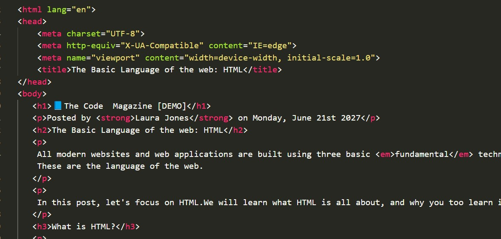

Posted by Laura Jones on Monday, June 21st 2027
 <All modern websites and web applications are built using three basic fundamental technologies: HTML, CSS and JavaScript.These are the language of the web.
In this post, let's focus on HTML.We will learn what HTML is all about, and why you too learn it.
HTML stands for HyperText Markup Language.It's a markup language that web developers use to structure and describe the content of the webpage(not a programming language).
HTML consists of elements that describe different types of content: paragraph,links,headings,images,videos,etc.Web browsers understand HTML and render HTML code as websites.
In HTML ,each element is made up 3 parts:
You can learn more at the MDN Web Docs
HTML consists of elements that describe that describe different types of content:
These are countless reason for learning the fundamental languageof the web.Here are 5 of them:
Hopefully you learned something new here.See you next time!